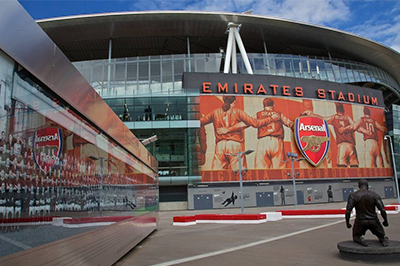

Londres, la capital de Inglaterra y del Reino Unido, es una ciudad del siglo XXI con una
historia que se remonta a la época romana. lugar de las coronaciones monárquicas británicas,
historias increíbles, equipos multicampeones, museos con algunas de las mejores atracciones a
nivel mundial, todo eso vestido con una increíble y heterogénea arquitectura que te hará viajar
a través de las épocas por las que la ciudad ha transcurrido.
Nosotros estamos para que puedas conocer Londres en sus múltiples y fascinantes facetas de la
mano de los mejores guías turísticos de habla hispana te presentamos los paquetes
que tenemos a tu disposicion:
Descubre la cara medieval de las capital británica
Llegaremos al Puente de Londres para admirar cómo el Támesis discurre por la ciudad.
¡Es uno de los monumentos más visitados! Continuaremos hasta el Tower Bridge para descubrir una de las panorámicas
más especiales de la capital. ¡Os enamoráis de las vistas!
Caminando por las callejuelas de la City reviviremos los orígenes de "Londinium" y nos empapamos del ambiente de la
zona. La arquitectura tradicional de estas calles crea una atmósfera que nos transportará al pasado.
Finalmente, llegaremos al punto más alto de la ciudad: la colina Ludgate . En ella se encuentra la emblemática
Catedral de San Pablo.
Tour Deportivo
El país que vio el surgimiento del deporte rey, tiene en su capital una de las mayores conglomeraciones de
equipos multi campeones en fútbol y rugby, estadios espectaculares, el mítico Wembley y uno de los torneos de
tenis más prestigiosos a nivel mundial.
No hace falta seguir destacando la historia y el presente deportivo de la única ciudad que fue sede de los
juegos olímpicos en tres ocasiones. el recorrido comienza con la visita a los estadios de los 4 principales equipos de la ciudad (Arsenal, Chelsea, Tottenham y West Ham),
continuamos con las instalaciones de wimbledon y finalizamos el recorrido adentrandonos en profundidad en el estadio de Wembley.

Tour Harry Potter
Explora los secretos de una de las más exitosas sagas de todos los tiempos. Este tour te lleva a conocer el
detrás de escena y presenta una increíble variedad de sets, trajes y accesorios. Aprende sobre algunos secretos
muy bien guardados, que hacen que esta saga sea tan popular en el mundo. aprende cómo se crearon las criaturas
con efectos especiales, animatrónicos y modelos reales; explora otros sets memorables de las películas,
incluyendo la sala común de Gryffindor, el dormitorio de chicos, la cabaña de Hagrid, la clase de pociones y la
oficina del Professor Umbridge en el Ministerio de la Magia
Ruta de Jack el Destripador
Todo comenzó el 31 de agosto de 1888, cuando un hombre que caminaba por un callejón oscuro vio un bulto tirado
en el suelo junto a unas puertas, su curiosidad reveló una prostituta asesinada... Así comienza la historia de
Jack el Destripador, uno de los asesinos más sangrientos de la historia. Durante este tour conocerás la historia completa recorriendo el escenario donde sucedió todo. Nuestra ruta de
Jack el Destripador comenzará junto a Whitechapel Gallery y finalizará en las inmediaciones de Spitalfields
Market, a pocos metros de la estación de metro Liverpool Street.
Tour destacado
¿Vienes a Londres de viaje y quieres conocer la ciudad junto a tu familia o amigos? ¿Dispones de poco tiempo y
quieres aprovechar al máximo tu visita londinense? ¿Te gustaría vivir una experiencia inolvidable? Con nuestro
Tour Privado por Londres en español podrás descubrir la ciudad a tu manera, con un tour totalmente personalizado y un guía exclusivo para ti y tu familia o grupos de amigos.
Personaliza tu viaje y disfruta de una aventura inigualable por la capital londinense.
En esta modalidad de tour, tú mandas. Nuestro guía en español os recogerá en vuestro hotel o lugar elegido
dentro de la zona 1 de Londres, y os acompañará en vuestro itinerario creado a medida según vuestros gustos y
preferencias. Será una experiencia única, en la que también aprenderás sobre la historia de la ciudad y sus
secretos y anécdotas más interesantes.